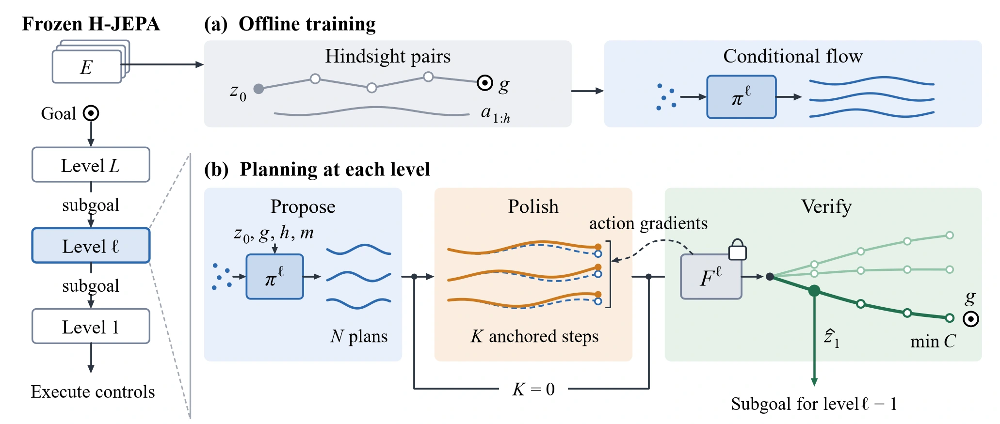

World models are better critics than optimizers


H-JEPA pathCriticJEPA pathstartgoal
Official Visual AntMaze tasks with the H-JEPA budget of 350 steps. Both planners run the same frozen three-level world model from the same simulator state toward the same goal. Shown at one video frame per control step, re-rendered top-down from the recorded joint states. We chose these tasks to show behavior. Rates over all tasks are in Results.
A visual world model predicts what will happen if an agent acts. Planners usually ask it two questions at once: how good is this plan, and which way should the plan change to get better. The second question is answered by following the model's gradients.
These turn out to be very different jobs. The same frozen model that can tell good plans from bad ones gives update directions that, after a few steps, mostly improve its own opinion of the plan rather than the plan itself. So we stopped asking the world model to optimize. CriticJEPA lets a learned proposer write the plans and keeps the world model as the judge.
01
The model already knows the way
Run the H-JEPA planner three times on the same 50 AntMaze tasks with the same frozen model, changing only the random start of its search. Each run solves about 72% of the tasks. Together, the three runs solve 92%.
So for almost every task, this frozen model can guide the ant to the goal. A single run of gradient search just does not find that route reliably.
02
Search learns to fool the model
To see why, we froze the simulator at 720 AntMaze states, let gradient search run for 0, 10, 30 and 90 steps, and then actually executed each resulting plan from the exact same state.
The first 10 steps help. After that, the error the model predicts keeps falling while the error the agent actually reaches stops improving. The gap between the two, the model's optimism, nearly doubles.
The reason is simple. Write the model's predicted cost as the true cost minus an error term ε. Every gradient step then follows two directions at once:
real progressprogress at fooling the model
Nothing stops search from following the second. In AntMaze this has a visible signature: on tasks whose outcome flips between restarts, the failed runs place their top-level subgoals near or inside walls about twice as often as the successful ones.
03
A good judge needs good options
Comparing plans is a different job. A shared prediction error shifts every candidate's score equally and leaves the ranking intact. So we asked the same frozen model to pick the best of eight plans, executed all eight from the same state, and checked its pick.
On search outputs, it picks at chance. On plans retrieved from the training data, it ranks best of all, yet its pick ends far from the goal, because those plans were never aimed at this goal. On goal-conditioned proposals, it ranks well and its pick lands closest.
The world model is a reliable critic. It just should not be the one writing the plans.
04
CriticJEPA: propose, polish, select
At every level of the hierarchy, a small flow-matching head trained on reward-free trajectories proposes a batch of plans aimed at the current goal. Optionally, a few gradient steps polish each plan, with an anchor that keeps it close to where it started. The frozen world model then imagines every candidate and keeps the one it predicts lands closest. The chosen high-level plan becomes the subgoal for the level below.
schematic

05
More goals for less compute
Every number averages three independently trained world models. One set of planning settings, chosen on one AntMaze model, is reused unchanged on the other models, environments, hierarchy depths, and on 50 AntMaze tasks created after the method was finished.
Visual AntMaze
Polish, but briefly
Across environments and hierarchy depths
H-JEPACriticJEPA-0CriticJEPA-5compute saved
06
Other environments
The same recipe and the same planning settings on contact-rich pushing, robotic manipulation, and room-to-room navigation with a distractor.
Abstract
Visual world models enable goal-directed planning by predicting action outcomes. Gradient-based planners optimize actions to lower predicted goal cost, but continued optimization can exploit prediction errors after execution stops improving. Comparing plans requires informative relative scores; improving them also requires reliable update directions. Exact-state execution reveals that a frozen hierarchical world model ranks goal-conditioned proposals even when its rankings among outputs of prolonged gradient search are uninformative. Effective planning pairs goal-directed candidates with predictions that distinguish their outcomes. We introduce CriticJEPA, which learns goal-conditioned flow proposals from reward-free trajectories and uses frozen rollouts to select among them at every hierarchy level. Forward selection forms a complete planner; short anchored updates refine candidates before selection. Across visual navigation and manipulation, CriticJEPA increases success at a fraction of the planning compute, transferring shared settings across independently trained models, hierarchy depths, and unseen tasks while keeping every world-model weight fixed.
Citation
@misc{liu2026criticjepa,
title = {CriticJEPA: World Models Are Better Critics Than Optimizers},
author = {Liu, Xvyuan and Fang, Jianjie and Zhang, Honglin and Wang, Zhaolu and
Zhang, Xin and Wu, Wei and Xu, Fengli and Gao, Chen and Li, Yong},
year = {2026},
note = {Preprint}
}